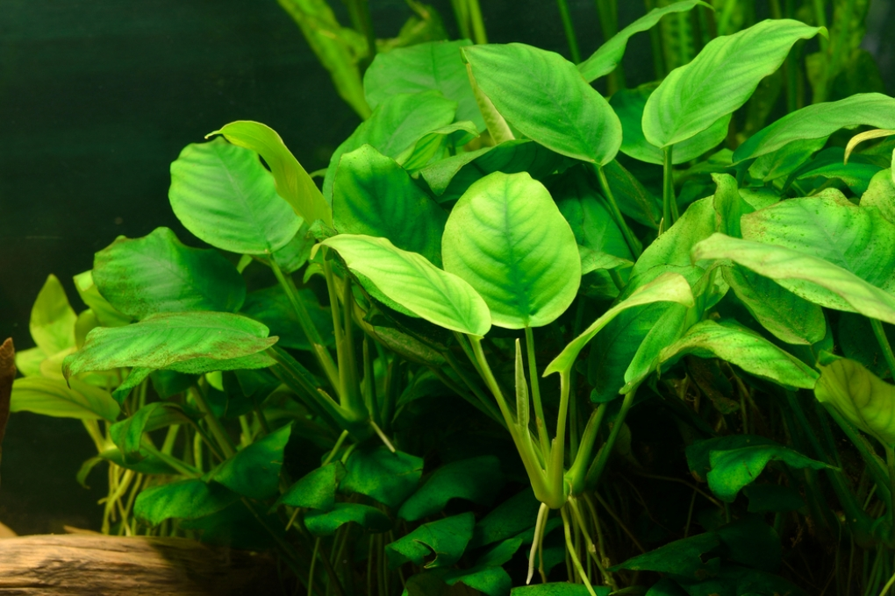
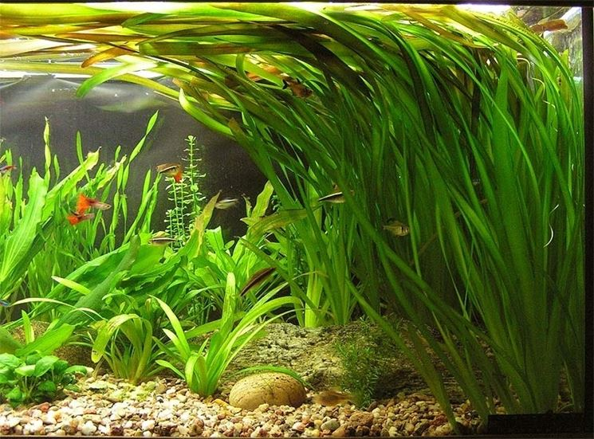
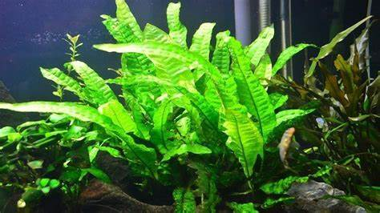

Plantas acuáticas
Las plantas acuáticas, también llamadas plantas macrófitas, hidrófitas o higrofitas, son aquellas que se desarrollan en ambientes húmedos.
Viven sumergidas total o parcialmente en agua. Están adaptadas a distintos medios, lagos, ríos, deltas, lagunas, pantanos, charcos y estanques,
agua dulce o salada, a temperatura ambiente o más o menos elevada.
Tipos de especies
- Anubias:Son resistentes y de crecimiento lento.
- Vallisneria:Estas plantas de hojas largas son excelentes para crear un aspecto natural en la pecera.
- Helecho de java:Una planta de aspecto exuberante que puede crecer en diferentes condiciones.
- Musgos de java:SE adhiere a rocas y maderas, proporcionando refugio para los peces.
- Elodea:Una planta flotante que proporciona refugio y es una fuente de oxígeno para los peces.

Anubias

Vallisneria

Helecho de java